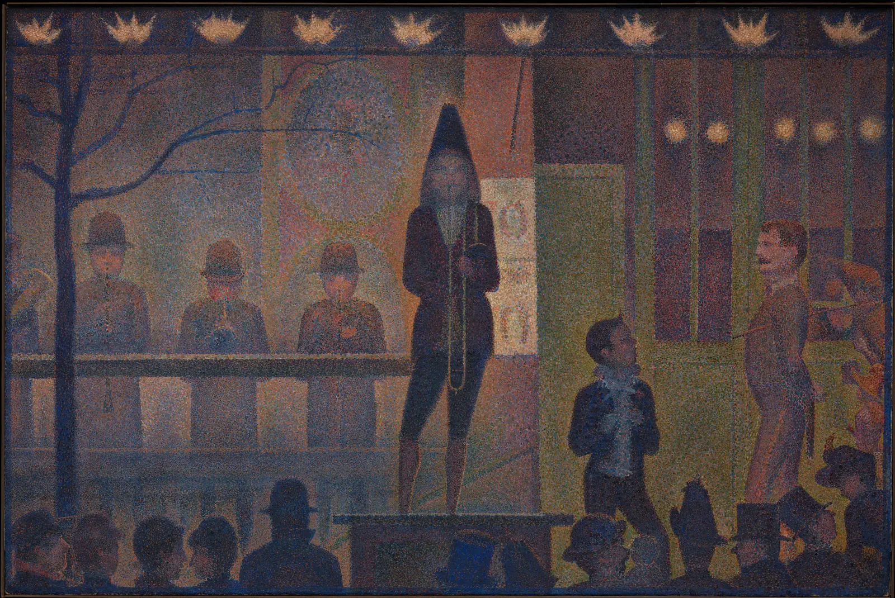

색의 지도
레몬은 노랗다. 그런데 그 노랑은 어디에 있을까. 레몬 껍질 속에? 레몬을 비추는 햇빛 속에? 그 빛을 받는 눈 속에? 아니면 "노랗다"고 판단하는 뇌 속에? 해 질 녘 전구 아래에서 보면 레몬은 주황에 가깝게 찍히는데, 우리는 여전히 노랗다고 느낀다. 이 장은 색이 생기는 자리를 따라가며, 앞으로 열여섯 장에서 하나씩 풀어 갈 질문들을 한 장의 지도 위에 펼친다.
- 색이 빛·물체·눈·뇌의 네 자리를 거쳐 생긴다는 것을 설명한다.
- 빛으로 섞기(가산), 물감으로 섞기(감산), 눈에서 섞기(병치)가 서로 다른 결과를 내는 이유를 본다.
- 같은 색이 다르게 보이고(동시대비), 다른 색이 같게 보이는(메타메리즘) 순간을 직접 만든다.
- 화면에 보이는 색이 기기마다 다르다는 사실과, 그 안에서 색을 다루는 요령을 안다.
- 색을 숫자로 적을 때의 첫 함정(HSL의 "명도")을 보고, 이 책 전체의 지도를 그린다.
색은 어디에 있는가
방에 불을 끄면 레몬의 노랑도 사라진다. 그러니 색은 레몬에만 있는 것이 아니다. 빛이 있어야 한다. 그렇다고 빛 속에 노랑이 들어 있는 것도 아니다. 햇빛에는 무지개의 모든 색에 해당하는 빛이 섞여 있고, 그 빛 자체는 희게 보인다. 레몬 껍질은 그 빛 중 일부(주로 파랑 쪽)를 흡수하고 나머지를 돌려보낸다. 돌려보낸 빛이 눈에 들어오면, 눈 안쪽의 세포가 그 빛을 세 가지 신호로 바꾸고, 뇌가 그 신호를 주변과 비교해 "노랗다"고 해석한다.
그래서 색은 한 자리에 있지 않고, 네 자리를 차례로 거쳐 생긴다. 이 책은 이 네 자리 각각에서 색을 바꾸는 손잡이를 하나씩 찾아간다.
물체에서 눈으로 가는 빛은 두 가지의 곱이다. 광원이 파장마다 얼마나 센지, 그리고 물체가 그 파장을 얼마나 돌려보내는지.
아래 시뮬레이터에서 이 곱셈을 직접 해 본다. 위 그래프는 파장 380~780 nm(사람이 볼 수 있는 범위)에서 광원의 세기(점선), 물체의 반사율(실선), 그리고 둘을 곱한 결과(색 띠로 칠한 넓이)를 보여 준다. 아래의 두 칸은 같은 빛을 두 방식으로 받아들인 결과다. 왼쪽은 화이트밸런스를 낮빛에 고정한 카메라, 오른쪽은 그 빛에 익숙해진 사람의 눈이다. 색온도(Color temperature)는 빛이 얼마나 붉은지 푸른지를 켈빈(K) 숫자로 나타낸 것으로, 낮으면 촛불이나 전구처럼 붉고 높으면 흐린 날 그늘처럼 푸르다(10장).
같은 레몬, 다른 빛
카메라와 눈의 차이가 바로 네 번째 자리, 뇌가 하는 일이다. 카메라는 들어온 빛을 그대로 적지만, 사람은 "지금 조명이 붉구나"를 짐작하고 그만큼 빼고 본다. 그래서 색은 측정할 수 있는 물리량(빛)이면서 동시에 판단의 결과(지각)다. 화가와 디자이너가 다루는 색은 대부분 이 두 번째 쪽이다. 한도경의 원칙 "색은 이름이 아니라 관계다"도 여기서 나온다. 같은 빛이라도 무엇 옆에, 어떤 조명 아래에 있느냐에 따라 다른 색이 된다.
세 갈래: 빛, 물감, 지각
색을 배우는 길은 크게 세 갈래다. 빛의 길은 화면, 조명, 무대처럼 빛을 내는 것들의 색을 다룬다. 물감의 길은 물감, 잉크, 염료처럼 빛을 흡수하는 것들의 색을 다룬다. 지각의 길은 같은 빛이 사람에게 어떻게 보이는지를 다룬다. 세 갈래는 서로 다른 규칙으로 움직이기 때문에, 한쪽에서 익힌 요령이 다른 쪽에서는 틀리기도 한다. 화면에서 빨강과 초록을 섞으면 노랑이 되는데, 물감으로 섞으면 탁한 갈색이 된다.
두 물감을 하나씩 골라 세 가지 방법으로 섞어 본다. 맨 왼쪽은 두 색의 빛을 한곳에 겹쳐 비추는 경우, 가운데는 두 색을 아주 작은 점으로 번갈아 찍어 멀리서 보는 경우, 오른쪽은 두 물감을 팔레트에서 실제로 섞는 경우다. 슬라이더로 두 번째 색의 비율을 바꾼다.
빛으로, 점으로, 물감으로 섞기
세 결과가 다른 이유는 각 방식이 빛을 다루는 방법이 다르기 때문이다. 빛을 겹치면 두 빛의 에너지가 그대로 더해진다. 물감은 각 안료가 빛의 일부를 흡수하므로, 섞인 물감은 두 안료가 모두 돌려보내는 빛만 돌려보낸다. 노랑 물감은 파랑 쪽을, 파랑 물감은 빨강·노랑 쪽을 흡수하니 둘 다 남겨 두는 초록만 살아남는다. 점으로 두는 방식은 그 중간이다. 빛을 더하지도 흡수하지도 않고, 두 색의 빛이 눈 속에서 넓이만큼 평균된다.
눈에서 섞이는 색: 점묘
세 번째 방식, 눈에서 섞이는 색을 그림의 방법으로 삼은 화가가 있다. 프랑스의 조르주 쇠라(Georges Seurat, 1859–1891)는 물감을 팔레트에서 섞지 않고 순수한 색을 작은 점으로 나란히 찍어, 보는 사람의 눈에서 섞이게 하려 했다. 이 방법을 점묘(Pointillism)라고 부르고, 이렇게 작은 색점이 눈에서 섞이는 현상을 병치 혼합(Partitive / optical mixing)이라고 한다.

아래는 같은 그림의 오른쪽 위, 가스등 세 개가 있는 부분을 원본 해상도로 잘라 낸 것이다. 경계선을 좌우로 끌어 "가까이에서 본 점"과 "멀리서 본 모습"을 비교한다. 멀리서 본 모습은 눈이 작은 영역의 빛을 평균내는 것을 흉내 내어, 점들의 빛을 섞은 결과다. 보는 거리 슬라이더를 밀면 섞이는 범위가 넓어진다.
점묘: 멀어지면 섞인다
쇠라의 기대와 달리, 점묘화가 언제나 더 "선명한" 색을 내지는 않는다. 병치 혼합은 빛의 평균이라서, 보색에 가까운 두 점을 나란히 두면 회색 쪽으로 간다. 쇠라의 그림이 보여 주는 반짝임은 색이 선명해서라기보다, 가까이 다가가면 점이 보이고 물러서면 섞이는 그 사이의 떨림에서 온다는 해석이 많다. 직물의 씨실과 날실, 인쇄물의 망점, 화면의 화소도 모두 같은 원리로 섞인다.
같은 색이 다르게 보일 때
첫 번째 시뮬레이터에서 조명이 바뀌어도 레몬이 노랗게 보이는 것을 봤다. 반대로 빛이 전혀 바뀌지 않았는데 색이 달라 보이기도 한다. 아래 그림의 두 회색 칸은 화면에서 정확히 같은 값(빨강·초록·파랑 모두 128)이다. 배경은 왼쪽 끝 검정에서 오른쪽 끝 흰색까지 이어진다. 오른쪽 칸을 끌어 배경 위를 오가며 왼쪽 칸과 비교한다.
같은 회색, 다른 회색
이 현상을 동시대비(Simultaneous contrast)라고 한다. 색은 둘레의 색과 반대 방향으로 밀려 보인다. 밝은 배경 위에서는 더 어둡게, 어두운 배경 위에서는 더 밝게, 붉은 배경 위에서는 조금 더 푸르게. 화가이자 교육자 요제프 알베르스(Josef Albers, 1888–1976)는 이런 현상을 색 수업의 한가운데에 두었고, 그 수업을 정리한 책 『색의 상호작용』(Interaction of Color, 1963) 서문에 색을 잘 쓰려면 "색은 끊임없이 속인다"는 것부터 알아야 한다고 적었다. 9장에서 그의 실험을 하나씩 따라 한다.
다른 색이 같게 보일 때
거꾸로, 실제로는 다른 두 색이 같게 보이기도 한다. 눈의 원뿔세포는 세 종류뿐이라서, 빛의 스펙트럼 전체가 아니라 그 스펙트럼을 세 가지 숫자로 요약한 값만 뇌에 보낸다. 그래서 스펙트럼 모양이 전혀 다른 두 빛도 세 숫자가 같으면 같은 색으로 보인다. 이것을 메타메리즘(Metamerism, 조건등색)이라 하고, 같아 보이는 두 색을 메타머(Metamer)라고 부른다.
문제는 "같아 보인다"가 조명에 달려 있다는 점이다. 아래 두 견본은 낮빛 아래에서는 똑같은 회청색이지만, 반사 스펙트럼이 다르다. 조명을 바꿔 본다.
낮에는 같고 밤에는 다른 두 견본
디자이너에게 메타메리즘은 실무 문제다. 인쇄소의 잉크, 간판 업체의 페인트, 매장 벽지가 같은 색표 번호를 달고 와도 재료가 다르면 스펙트럼이 다르다. 그래서 낮빛 아래에서 맞춘 색이 매장 조명 아래에서 갈라진다. 이를 피하는 가장 확실한 방법은 실제로 쓰일 조명 아래에서 견본을 나란히 놓고 확인하는 것이다. 빛과 눈의 원리는 2장, 조명의 색은 10장, 인쇄의 색은 15장에서 다룬다.
화면 색의 한계
이 책의 모든 색은 화면 위에 있다. 그리고 화면은 색을 다루기에 완벽한 도구가 아니다. 이 사실을 여기서 한 번 분명히 해 둔다.
내 화면이 어두운 색과 밝은 색을 얼마나 잘 구분해 보여 주는지 간단히 확인해 본다. 아래는 화면 값 0(검정) 또는 255(흰색)에서 시작해 몇 단계씩 밝아지거나 어두워지는 계단이다. 이웃한 칸의 경계가 몇 번째 칸부터 보이는지 센다.
내 화면 점검: 어두운 계단, 밝은 계단
화면은 또 낼 수 있는 색의 범위, 곧 색역(Gamut)이 정해져 있다. 실제 세계에는 화면이 낼 수 없는 색이 많다. 아주 선명한 청록이나 형광 물감의 초록이 그렇다. 반대로 화면의 빛나는 파랑은 물감과 잉크로 만들기 어렵다. 그래서 이 책은 화면 밖의 색이 필요할 때, 명도와 색상을 지키며 채도만 줄인 가장 가까운 색으로 바꿔 보여 주고 그렇게 했다고 밝힌다. 색역은 3장, 화면과 인쇄의 차이는 15장의 주제다.
색을 숫자로 적는다는 것
"하늘색"이라고 말하면 사람마다 다른 색을 떠올린다. 그래서 디지털 도구는 색을 숫자로 적는다. 가장 흔한 방법은 빨강·초록·파랑 빛의 세기를 0~255로 적는 RGB, 그리고 이를 사람이 다루기 쉽게 바꾼 HSL(Hue, Saturation, Lightness)이다. HSL은 색상(H, 색상환 위의 각도), 채도(S, 얼마나 선명한가), 명도(L, 얼마나 밝은가)로 색을 적는다. 이름만 보면 사람의 감각과 딱 맞을 것 같다.
정말 그런지 본다. 아래 윗줄은 HSL의 명도 L을 모두 같게 두고 색상만 바꾼 열두 색이다. 숫자로는 "밝기가 같은" 색들이다. 시뮬레이터 오른쪽 위의 흑백 단추를 눌러 명도만 남겨 본다.
HSL의 함정: 같은 "명도 50%", 다른 밝기
HSL이 틀린 것은 아니다. HSL은 화면이 빛을 내는 방식(빨강·초록·파랑 빛의 비율)을 원통 모양으로 다시 배치한 것일 뿐, 사람이 밝기를 느끼는 방식으로 만든 것이 아니다. 사람의 눈은 같은 세기의 빛이라도 초록·노랑 쪽을 훨씬 밝게, 파랑 쪽을 어둡게 느낀다. 그래서 색을 고르고 단계를 만드는 일에는 지각 균일 색 공간(Perceptually uniform color space)이 필요하다. 숫자의 차이가 눈으로 느끼는 차이와 비슷하도록 만든 공간이다. 이 책은 CIELAB(1976)과 OKLab·OKLCH(2020)를 쓰고, 계산에는 공통 엔진을 쓴다. 본문에서 "이 책의 모델로 계산하면"이라고 할 때는 이 엔진의 값이다.
이 책의 지도
지금까지 이 장에서 만난 질문들은 각각 한 장씩의 주제가 된다. 책은 네 부로 나뉜다. 지각은 색이 생기는 자리(빛과 눈, 빛의 색과 그림자의 색), 체계는 색을 다루는 도구(숫자, 섞기, 색상환), 관계는 색과 색 사이에서 일어나는 일(명도, 채도, 대비, 상대성), 쓰임은 색이 실제로 일하는 곳(그림, 문화, 접근성, 팔레트, 인쇄)이다. 마지막의 색 실험실에서는 이미지 한 장으로 모든 도구를 한꺼번에 쓴다.
마지막 시뮬레이터는 이 지도를 손에 쥐어 본다. 색 하나를 고르면, 그 색을 이 책의 여러 장의 눈으로 동시에 본다. 원판은 OKLCH 공간의 한 단면이다. 가운데는 회색이고 바깥으로 갈수록 선명해지며, 둘레를 돌면 색상이 바뀐다. 빗금 친 바깥쪽은 화면이 낼 수 없는(sRGB 색역 밖의) 색이다. 원판 위의 손잡이를 끌어 색을 고르고, 슬라이더로 명도를 바꾼다.
색 하나의 지도
같은 색 하나가 장마다 다른 얼굴을 보인다. 흑백에서는 밝기 하나, 전구 아래에서는 따뜻한 색, 어떤 사람의 눈에는 전혀 다른 색, 흰 종이 위에서는 읽히지 않는 글자. 색을 "고른다"는 것은 이 얼굴들 중 어느 것이 중요한 자리인지 아는 일이다. 포스터라면 흑백과 바탕이, 웹사이트 버튼이라면 대비와 색각이 먼저다. 이 책은 그 판단을 정답 대신 질문으로 남긴다. 이 색은 무엇을 전하려는가, 그리고 그 일을 하고 있는가.
서윤의 작업 노트
모니터에서 고른 초록이 세 번 바뀌었다
9월 첫 주, 윤서윤은 두 가지 일을 받았다. 하나는 동네 독립서점 "책방 E"의 리브랜딩이다. 주인은 "오래된 동네 책방 느낌은 살리되, 젊은 손님도 들어오고 싶게"를 부탁하며 로고 색, 가을 행사 포스터, 웹사이트를 맡겼다. 다른 하나는 11월 가을 개인 소품전에 걸 수채화 세 점이다. 제목만 정해 두었다. 「창가의 책」, 「비 오는 골목」, 「해 질 녘 서점 앞」.
서윤은 퇴근길에 노트북에서 서점 로고 초록을 골랐다. 이 책의 엔진으로 적으면 #2f7d5b, OKLCH로 명도 0.53·채도 0.09·색상 162°의 차분한 초록이다. 그런데 휴대폰으로 같은 파일을 열자 더 선명하고 푸르게 보였고, 회사 프린터로 뽑은 시안에서는 거무스름한 녹색이 되었고, 서점의 전구 아래에서는 올리브빛이 돌았다. "색 하나를 골랐는데 세 번 바뀌었어요."
멘토인 화가 한도경은 시안을 서점 서가 앞에 대 보고 말했다. "색은 이름이 아니라 관계야. 이 초록이 무슨 색인지 묻기 전에, 어디에, 무엇 옆에, 어떤 빛 아래에 놓일지부터 적어." 도경은 휴대폰 메모장도 못 다룬다며 서윤에게 사진 공유하는 법을 물었고, 서윤은 그 대신 도경의 오래된 색 일지를 빌렸다. 두 사람은 이번 가을 작업을 이 책의 순서대로 함께 기록하기로 했다.
#2f7d5b)과 "놓일 자리·옆의 색·조명"을 함께 적는다.핵심 정리
- 색은 빛·물체·눈·뇌의 네 자리를 거쳐 생긴다. 눈에 들어오는 빛은 광원과 물체 반사율의 곱이고, 뇌는 그 빛을 주변과 조명에 비추어 해석한다.
- 빛은 섞을수록 밝아지고(가산), 물감은 섞을수록 어두워지며(감산), 작은 점은 눈에서 넓이만큼 평균된다(병치). "노랑+파랑=초록"은 물감의 규칙이다.
- 같은 색도 둘레의 색에 따라 다르게 보인다(동시대비). 색은 홀로 판단하지 말고 실제로 놓일 자리에서 판단한다.
- 스펙트럼이 다른 두 색도 한 조명 아래에서 같아 보일 수 있다(메타메리즘). 견본은 실제로 쓰일 조명 아래에서 확인한다.
- 화면에 보이는 색은 기기마다 다르다. 이 책은 절대적인 색보다 색과 색의 관계를 보도록 쓴다.
- HSL의 "명도"는 사람이 느끼는 밝기가 아니다. 색을 고르고 단계를 만들 때는 Lab·OKLCH 같은 지각 균일 색 공간을 쓴다.
확인 퀴즈
1. 노랑 물감과 파랑 물감을 섞으면 초록이 되는데, 노랑 빛과 파랑 빛을 한곳에 비추면 흰빛에 가까운 색이 된다. 가장 알맞은 설명은?
2. 서점 주인이 낮에 창가에서 고른 포스터 종이와 벽 페인트가 똑같아 보였는데, 저녁에 전구를 켜자 서로 달라 보였다. 이 현상의 이름과 가장 좋은 대처는?
3. 발표 자료에 HSL로 명도 50%, 채도 100%인 여섯 색을 골라 흰 바탕 위 글자색으로 썼다. 가장 먼저 생길 문제는?
4. 쇠라의 점묘화를 멀리서 볼 때 색점들이 섞이는 방식에 가장 가까운 것은?